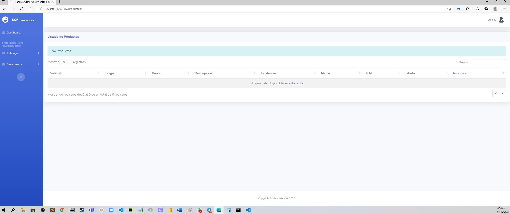

Objetivo principal
El objetivo principal es la cracion de un sistema web, pero realcionado a bases de datos y claro el uso de adecuado de este tipo de sistemas ya que en un futuro sercano nos servira de una manera que nos podremos desarrollar de manera profesional r
Explicacion del Funcionamiento del Sistema de Facturacion web:
El Objetivo principal del Sistema de Facturacion web es la creacion y el manejo de las bases de datos, con la creacion del sistema web podemos administrar productos de nuestra "tienda" donde podremos crear una categoria completa del producto deseado, podria ser nuevo o a punto de expirar, con eso tenemos una amplia forma de administrar lo que podria ser el producto completo, tambien tenemos el listado de Movimientos, en donde podremos encontrar lo que es Compras y Facturas, en Compras podremos encontrar los productos comprados o vendidos a nuestros clientes, provedores, etc...
En Facturas, podremos realizar facturaciones de nuestras compras o ventas realizadas por nuestros provedores o cleintes, tambien cuenta con el metodo de envio por correo electronico o en formato fisico.
Diagrama de casos de usos en Sistema de Facturacion Web:
Direccion completa al diagrama de Casos de Usos: https://lucid.app/lucidchart/invitations/accept/inv_3d57db0f-2ba5-4894-83ab-6461cdbfc8fa
Video explicando el Funcionamiento del Sistema de Facturacion
URL del video completo: https://youtu.be/7L1EbVq5RBc
Vista previa del Sistema Web:

Enlace directo para descargar el Sistema Web https://github.com/oy0rzabal/sis_cmp_fac_py_dj_2.2-.git